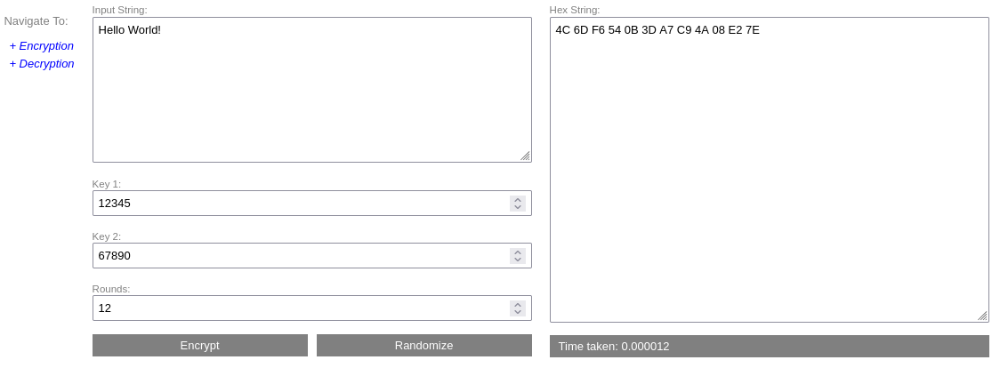
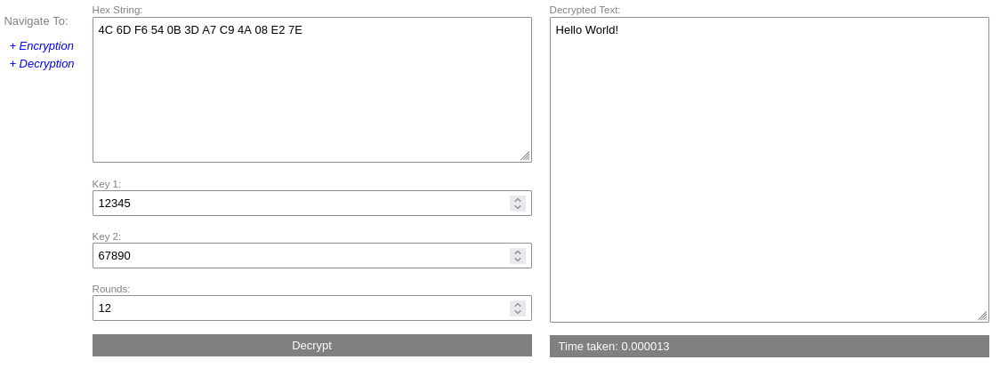

Baseline Project Overview
Introduction
The Baseline project is a C program designed to implement a fundamental encryption algorithm. This algorithm demonstrates core cryptographic techniques, including key scheduling, permutation, XOR operations, and nonlinear transformations to securely encode input strings. This document offers a comprehensive overview of the algorithm's design, operational complexity, and additional technical insights.
>> Try Live Demo <<
Algorithm Description
Key Schedule Generation
The key schedule in this encryption algorithm is established using two 32-bit keys and a configurable number of rounds. For each round, a specific byte value is computed based on the provided keys and the round number. This byte value plays a crucial role in the permutation and XOR operations performed during the encryption process, ensuring a robust transformation of the input data.
Encryption Process
- Permutation: The input array undergoes a permutation process influenced by a value derived from the key schedule. This step scrambles the array to enhance the diffusion of the data.
- XOR Operation: Each byte of the permuted array is XORed with a round key extracted from the key schedule. This step introduces confusion into the encryption, making it harder to reverse-engineer the original data.
- Nonlinear Transformation: A randomly generated byte array is added to the XORed array. This introduces nonlinearity into the encryption process, further complicating any attempts to decrypt the data without the correct key.
Complexity Analysis
Time Complexity
The time complexity of the encryption algorithm is O(n * r), where n
represents the
size of the input array and r denotes the number of rounds. This complexity arises
because each
round requires processing the entire array, and the total number of rounds influences the overall
time
required for encryption.
Space Complexity
The space complexity of the algorithm is O(n), accounting for the storage needs of the
input array,
the encrypted output array, the random addition array, and the key schedule. This complexity assumes
that the
size of these arrays scales proportionally with n, the size of the input data.
Usage
To utilize the Baseline encryption program, compile the provided source code and run the resulting executable with the appropriate command-line arguments as shown below:
./baseline <string> <key1> <key2> <rounds>- string: The input string that you want to encrypt.
- key1: The first 32-bit key used in the encryption process.
- key2: The second 32-bit key used in the encryption process.
- rounds: The number of encryption rounds to be performed.
Example
For instance, to encrypt the string "Hello World!" using the keys 12345 and 67890 with 12 rounds, you would execute the following command:
./baseline "Hello World!" 12345 67890 12The output will display the encrypted representation of the input string in hexadecimal format, demonstrating the effectiveness of the encryption algorithm.
>> Try Live Demo <<
Encryption Process:
Decryption Process:
© 2024 Baseline Project